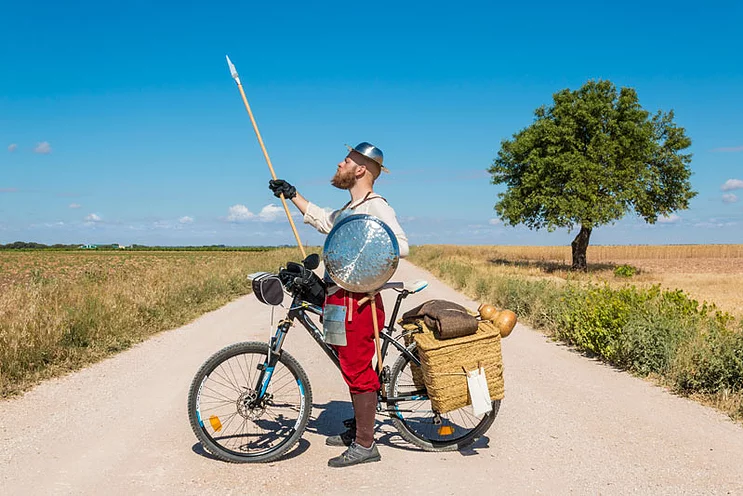

¿Quién es?
Es la historia de un hombre que, tras leer un libro de caballerías, abandonó su obra, se construyó una armadura con sus propias manos y se dedicó a viajar a Castilla en su fiel bicicleta, recreando las principales hazañas de nuestro querido don Quijote con sólo su cámara como compañía.
autre
cliquer pour continuer à lire.